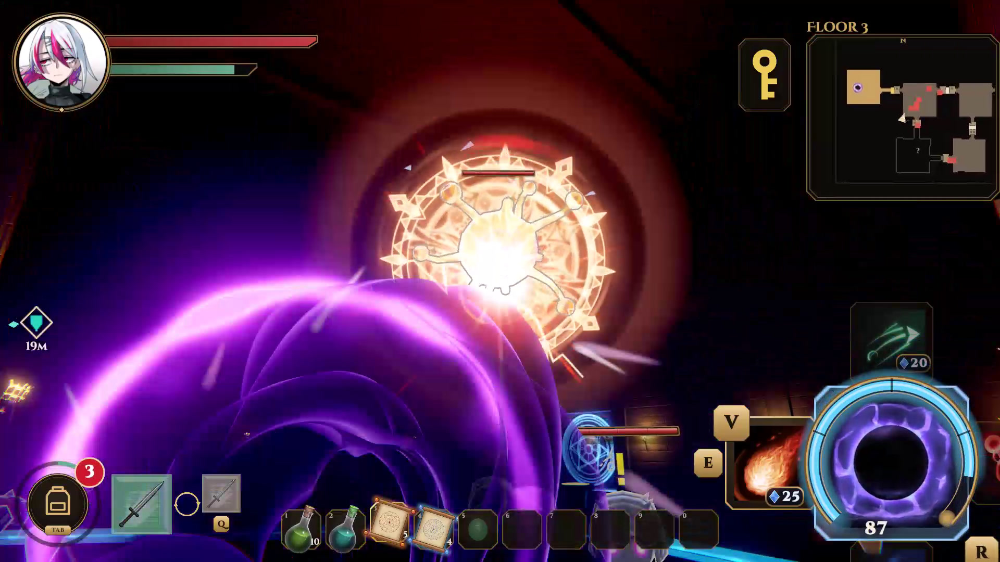

『DIMAZE（ディメイズ）』は、果てのない塔を登る3Dアクションローグライトです。主人公は、敵がファイアーボールやレーザー、アイススピアを発動しているその最中に、魔法陣ごと「ドレインホール」で吸い込み、溜めた魔力で撃ち返して戦います。避けるより、喰らう。敵の攻撃が強いほど、こちらの武器も強くなります。
敵の攻撃に合わせる操作といえば、弾き返すパリィや、すれすれで避けるジャスト回避がよくあります。DIMAZEのメインアクションはそのどちらでもなく、敵の魔法を発動中に吸い込んで、自分の武器にすることです。回避の操作もありますが、主役は「喰らう」ほうです。
危険なものほど、おいしい。 強い敵の大きな魔法ほど、吸えれば強い武器になります。だから、プレイヤーは危ない攻撃に自分から近づいていきます。普通のアクションとは逆の判断が生まれるのが、この作品の面白さの芯です。
吸うには賭けがいる。 ドレインホールは開いている間スタミナを使い、空振りすると約1.4秒無防備になります。早く開けすぎれば損をし、遅ければ当たる。敵の詠唱を読んで、ちょうどの瞬間に口を開く駆け引きがあります。

「敵の魔法を吸って、撃ち返す」。仕組みは一文で言い切れるようにしています。そのうえで、文字の説明に頼らず、見た目と音で伝わるように作っています。
舞台は、雲の上まで果てしなく続く塔の形をしたダンジョンです。部屋のつながりや敵の配置は毎回自動で生成されるので、同じ塔を何度登っても毎回違う道のりになります。死ぬと最初の層から登り直し、登るほど層ごとの仕掛けと敵が変わっていきます。
Steamで体験版（約15分）を無料配信しており、第1層・第2層を登りきると、第3層のボス層で塔の番人「マジャーク」が現れるところまで遊べます。
中心の動き（ドレインホール）が気持ちよくなければ、この作品は成り立ちません。遊んでみて「まだ気持ちよくない」と感じたところから、60fpsで撮ってコマ送りで見直し、原因を一つずつ探しました。
| 見つけた問題 | 原因 | 直したこと |
|---|---|---|
| 口に入る瞬間が見えない | 掴んだ瞬間の閃光で画面がピンク白に飛び、弾が巻き込まれる0.16秒が隠れていた | 閃光を0.35倍に抑え、白飛びや全画面の色フラッシュを使わない決まりにした |
| 吸った後に目の前で爆発する | 一斉射の3発目が渦に飲まれず、口の手前の地形に触れて爆ぜていた | 弾を口の前で止める時間を延ばし、近くの弾をまとめて飲み込むようにした |
| 火球が抵抗しない | 弾がすっと消えるだけで、吸い込む手応えがなかった | 口の前で0.22秒震えて膨らみ、粘ってから巻き込まれるようにした |
| 音に山がない | 吸収音の一番大きい部分が、飲み込んだ0.53秒後に来ていた | 掴んだ瞬間は吸い込みの音だけ、飲み込みきった瞬間に一番大きい「ゴクン」を鳴らす順番に変えた |
| 耳障りなパチパチ音 | 「吸える」合図の音が0.4秒ごとに鳴り続け、炎のループ音にもノイズが多かった | 録音を波形で調べて二つの原因を特定し、どちらも外した（合図の光は残した） |
セキロの弾き、カービィの吸い込み、Controlの「掴んで投げ返す」を比べ、気持ちよさに共通する5つを決まりにしました。
次の段階として、吸い込むタイミングで成功を3段（ジャスト・普通・早め）に分け、うまく取れたときほど演出が大きくなる設計を進めています。成功した後に罰を置かない、格付けの文字は出さない、押してから口が開くまでの速さは変えない、という決まりをチームで決めたうえで作っています。
手触りや演出は、感覚だけで決めずに、録画して比べることを繰り返しました。中心のドレインホールは、少なくとも3回（9/15、9/21、10/19）大きく作り直しています。そのうえで、似た仕組みの8作品と比べて「足りないもの」を32項目に分けて洗い出し、次の作り込みの設計書にまとめました。
Unity標準の灰色のマテリアルから、自作のセルシェーダー、炎の髪のシェーダー、11層のエフェクト、画面の揺れと圧を一つずつ足していきました。咆哮の声は、チームメンバーが実際に叫んだ声を使っています。
体験版をSteamで配信し、2026年10月のSteam Next Festに参加しています。ストアページ、トレーラー、プレスキット、公式サイトまで、販売に必要なものをチームで用意しました。
Next Fest の前は、体験版を遊んだ人のうちウィッシュリストに入れてくれたのは2.5%ほどでした。そこから、吸い込みの手触り、層ごとの遊び方、ボスの登場演出、導入の分かりやすさを作り直して Next Fest に臨み、開始後は遊んだ人の約7割がウィッシュリストに入れてくれています。
早期アクセスでは、新しいボス、罠魔法、新しい敵、閉じた部屋ではない開けた層を順に追加していく予定です。
| 使った箇所 | 内容 |
|---|---|
| 開発の支援（AI） | AIアシスタント（Claude）を、コードの作成と修正、不具合の原因調査、演出の分析、資料作り、宣伝素材の編集の補助に使いました。どの演出を入れるか、何を良しとするかの判断は、チームで遊んで確かめて決めています。 |
| 敵の声（AI） | 一部の敵の声は、録音した声をAIで加工して作りました。ボスの咆哮は、チームメンバーが叫んだ声です。 |
| エフェクト素材 | 一部のエフェクトのテクスチャに、無料配布の素材（Brackeys' VFX Bundle、CC0）を使っています。シェーダーと組み合わせ方は自作です。 |
| トレーラーの音楽 | トレーラーのBGMは、フリー素材サイト OpenTracks の楽曲「Hard Advent」を使用しています（ゲーム内にBGMはありません）。 |